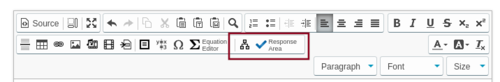
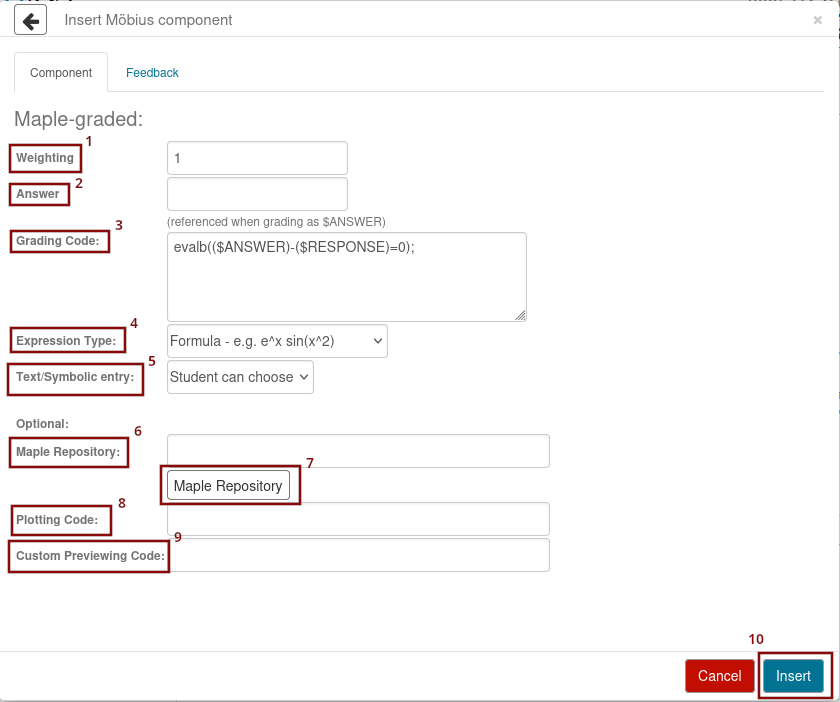

Questions graded by Maple are obviously graded using the Maple engine for symbolic manipulation. However, we often forget that we can use Maple Graded Questions to give partial marks. We will talk about it later but we first start by the obvious first subject.
When authoring a question, click Response Area to insert an area where students will have to submit an answer.

You get the following menu with all the possible types of questions.

The answer to the question goes in theory
into the text area Answer (item 2 in the figure above).
Möbius variables introduced in the Algorithm section of
the question could be used here to write the solution. We said in
theory because the answer does not have to go into this field. It
is often preferable to use this field to display the solution to
the students in a nice format (mathml) that is not suitable for
computations in Maple. To do that, one writes the answer in the
format
printf(MathML[ExportPresentation](
...solution...));,
where the solution is written using the variables defined in the algorithm section.
The Maple code used to grade the answer goes into the text area Grading Code (item 3 in the figure above). The variable $RESPONSE holds the answer given by the student. The variable $ANSWER holds the content of the text area Answer. If this content is the answer in a proper mathematical format for Maple, then you may consider that the variable $ANSWER contains the right answer to the question and use it in the code to grade the answer. By default, the grading code found in the text area is
evalb( (\$ANSWER)-(\$RESPONSE) = 0);
This is often enough. However, a little bit better code is
evalb( simplify( (\$ANSWER)-(\$RESPONSE) ) = 0);
and variations of this form. We will come back later on the subject of typical Maple codes that can be used to grade a question. Möbius variables defined in the Algorithm section of the question could be used in this field.
In the section Expression Type (item 4 in the figure above), you select the type of expression accepted in the student's answer: Formula - e.g. e^x sin(x^e) or Maple Syntax - e.g. diff(2*f(x),x).
Give a non
simplified answer, then the students will always get it
wrong because their unsimplified answer will be simplified
before being marked by Maple.After having selected the Expression Type, you have to select the Text/Symbolic entry (item 5 in the figure above). If you select Formula - e.g. e^x sin(x^e) for Expression Type, then there is only one choice for Text/Symbolic entry; namely, Student can choose. Students can use the text mode or the equation editor to enter their answer. If you select Maple Syntax - e.g. diff(2*f(x),x) for Expression Type, then there are two options for Text/Symbolic entry; namely, Symbolic entry only or Text entry only.
You enter in the text area beside Maple Repository (item 6 in the figure above) the locations of the Maple Library Archives (.mla format) that are used in the box Grading Code. To locate the Maple Library Archives in your content repository, it is simpler to click on the button Maple Repository (item 7 in the figure above) and use the file management tool to locate the Maple Library Archives. Note that Maple libraries are not loaded this way but by simply using the command with(library_name); in the box Grading Code.
If the answer to a question is a function, then it is possible to allow students to plot the graph of their answer and the graph of the correct solution. To do so, it suffices to enter a Maple code similar to
plot([$RESPONSE, x=-10..10);
or
plot([$RESPONSE,$ANSWER], x=-10..10);)
in the box Plotting Code
(item 8 in the figure above).
In the box Custom Previewing Code (item 9 in the figure above), you may enter a maple formula to be used when students display their solution. The typical formula will probably be
printf(MathML[ExportPresentation]($RESPONSE));.
This may be quite useful if the Expression Type is
Maple Syntax - e.g. diff(2*f(x),x) .
Once you are done, you just have to click on Insert (item 10 in the figure above).
You may assigned partial marks to an answer; namely, a value between 0 and 1. The code in the box Grading Code will have the following format.
if ( some operations on $RESPONSE and $ANSWER is true ) then
a value between 0 and 1 ;
else
evalb( simplify( ($ANSWER)-($RESPONSE) ) = 0);
end if;
For instance:
if ($RESPONSE=6) then
0.5;
else
evalb( simplify(($ANSWER)-($RESPONSE) ) = 0);
end if;
For some questions, the answer may be a numerical value or a string
depending on the situation. For instance, you may ask students to
compute a limit if possible. If the limit exists, then they have to find
the value. If the limit does not exist, then they have to write
diverge
.
The code in the box Grading Code will looks like this one.
A:=$ANSWER; R:=$RESPONSE; SR:= convert($RESPONSE, string); SA:= convert($ANSWER, string); evalb(SR=SA) or evalb(A=R);
For this code to work, Expression Type must be set to Maple Syntax - e.g. diff(2*f(x).x) and the option Test entry only of Text/Symbolic entry must be selected.
The content of the Answer box must be $ans, where $ans is defined in the section Algorithm as either
$ans = "diverge";
or
$ans = a numerical value ;
Suppose that students are asked to rewrite an algebraic expression in \(x\) in the format \(P(x)/ Q(x) \), where \(P(x)\) and \(Q(x)\) are two polynomials with no common factor. Students have to type in their answer in the format [ P(x), Q(x) ] in the Response Area.
The content of the box Grading Code will look as it follows.
A:=$ANSWER;
R:=$RESPONSE;
evalb( type(R,list) and numelems(R)=2 and is(R[2] <> 0) ) and
is( (R[1])/(R[2]) = (A[1])/(A[2]) ) and type(simplify( (A[1])/(R[1]),realcons);
For this code to work, Expression Type must be set to Maple Syntax - e.g. diff(2*f(x).x) and the option Test entry only of Text/Symbolic entry must be selected.
The content of the Answer box must be [$P, $Q], where $P and $Q are defined in the section Algorithm as
$P = a polynomial in x ; $Q = another polynomial in x ;
Suppose that the answer to a question defined in the section Algorithm is
$ans = maple("$a*(x-($b))^2 + ($c)");
where $a, $b and $c are integers that have been defined earlier in the section Algorithm. Moreover, suppose that the student's answer must be in the exact same format than the instructor's answer; no simplification or equivalent form are acceptable. The content of the Answer box must be
$ans;
and the content of the box Grading Code must be
if ( evalb( simplify( ($ANSWER)-($RESPONSE) ) = 0) ) then
patmatch($RESPONSE, a::integer*(x-b::integer)^2 + c::integer);
else
false;
end if;
Consult the definition of the command patmatch() in Maple for the complete list of possible types that can be used in addition to integer.
The question type Mathematical Formula that one fond under Response Area has a sub-option called Vector of formulas to grade solutions in vector form (a,b,...,) . Unfortunately, it can only test if students give the same vector as the one provided in the variable $ANSWER. This grading tool cannot be used for anything else; in particular, it cannot be used if multiple answers are possible. For that, Maple Graded questions should be used. However, Maple does not use parentheses to denote vector.
Suppose that you need to test if a parametric representation in the format \(\big(f(s,t),g(s,t),h(s,t)\big)\) is the parametric representation of a surface \( a x + b y + c z + d = 0\). The following Maple code does exactly that.
with(LinearAlgebra);
R := Vector([parse("$RESPONSE")]);
evalb( is( Rank(Matrix([simplify(diff(R,t)),simplify(diff(R,s))]))=2 )
and is( simplify(($a)*R[1]+($b)*R[2]+($c)*R[3]) + $d = 0) );
The command [ parse("$RESPONSE") ] replace the parentheses by brackets that Maple uses to define list. The list can then be used to create a column vector. Students can type in their answer in the format \( (f(s,t),g(s,t),h(s,t)) \) as well as in the format \(f(s,t),g(s,t),h(s,t)\) (without parentheses) and \([f(s,t),g(s,t),h(s,t)]\) (with brackets instead of parentheses).
For such questions, variables from the Algorithm section of the question should be used to determine if the answer is right or wrong, and the Answer box of the form to create Maple Graded questions should be used to display an answer to the students. For instance, in the example above, we may want to enter printf("Many possible solutions") in the Answer box. To write a vector with parentheses in the Answer box, it has to be in text mode using printf( ) as we just did because Maple removes the parentheses by default. So, we may want to write something like printf("($f,$g,$h)").
Suppose that you have a question whose answer is a matrix. For instance, you may ask students to find the inverse of a matrix \(A\). The Algorithm Section will generate the random matrix \(A\) (there are several ways to do it) and will include the following command to generate the inverse matrix of \(A\).
$ans = maple("LinearAlgebra[MatrixInverse]($A)");
To grade this question, you need to use a Maple Graded question. The box Grading Code in the response area will be:
with(LinearAlgebra): AI := $ans; R := $RESPONSE; LinearAlgebra[Equal](R,AI);
You will also need to select Maple Syntax - e.g. Diff(2*f(x),x) for the Expression Type and Symbol entry only for the Text/Symbolic entry. If you want to display the solution, then you need to write the command
printf(MathML[ExportPresentation]($ans))
in the Answer box of the response area.
We give a few examples to illustrate how the Maple package Logic can be used to create questions for a logic course.
Suppose that you want students to give you the disjunctive normal form of a given logical statement. You will use the section Algorithm to create your statement. Suppose that your statement is stored in the variable $exp. The (reduced) disjunctive normal form of your statement is given by
$ans = maple("with(Logic); Normalize($exp,form=DNF)");
To grade this question, you need to use a Maple Graded question. The code has to determine if the expression given by the student is equivalent to $ans and if it has the desired format. The solution has to be of the form P ∨ Q ∨ ..., where P, Q, ... are statements that include only ∧ ¬ and atomic propositions.
The following code for the Maple Graded question expects that students will give the reduced disjunctive normal form (no redundant statements are included)
with(Logic);
decomp := proc(stm)
local rst, s1, s2, r, rst1, n;
rst := [];
s1 := StringTools[Words](convert(stm, string));
s2 := ListTools[Search]("or", s1);
if ( s2 > 0 ) then
r := nops(stm);
for n from 1 to r do
rst1 := decomp(op(n, stm));
rst := [rst[], rst1[]];
end do;
else
rst := [ Logic[Normalize](stm) ];
end if;
return rst;
end proc;
RR := $RESPONSE;
ANS := $ans;
decision := true;
RRW := StringTools[Words](convert(RR,string));
if ( (ListTools[Search]("iff",RRW) = 0)
and (ListTools[Search]("implies",RRW) = 0)
and (ListTools[Search]("nand",RRW) = 0)
and (ListTools[Search]("nor",RRW) = 0)
and (ListTools[Search]("xor",RRW) = 0) ) then
ORS := decomp(RR);
sr := numelems(ORS);
RRDS := [ "(", convert(ORS[1],string) , ")" ];
for n from 2 to sr do
RRDS := [ RRDS[], " &or (", convert(ORS[n],string) , ")"];
end do;
RRD := parse(cat(RRDS[]));
sa := nops(ANS);
if not ( Logic[Equivalent](RRD,ANS) and (sa = sr) ) then
decision := false;
end if;
else
decision := false;
end if;
evalb( decision );
If you do not mind that there be redundant statements in the disjunctive normal form, then it suffices to replace the test
sa := nops(ANS);
if not ( Logic[Equivalent](RRD,ANS) and (sa = sr) ) then
decision := false;
end if;
by
if ( Logic[Equivalent](RRD,ANS) ) then
for n from 1 to sr do
if ( Logic[Normalize](ORS[n],form=DNF) <> ORS[n] ) then
decision := false;
break;
end if;
end do;
else
decision := false;
end if;